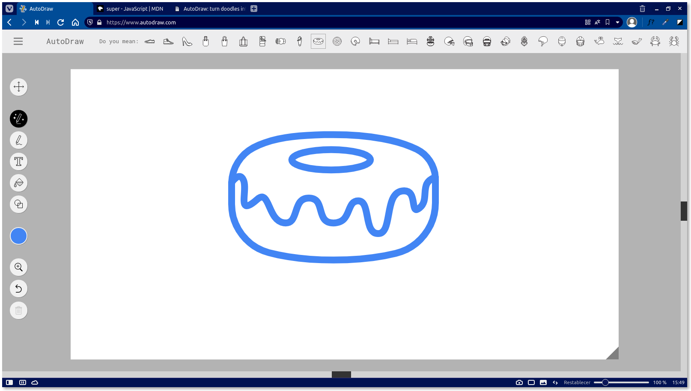
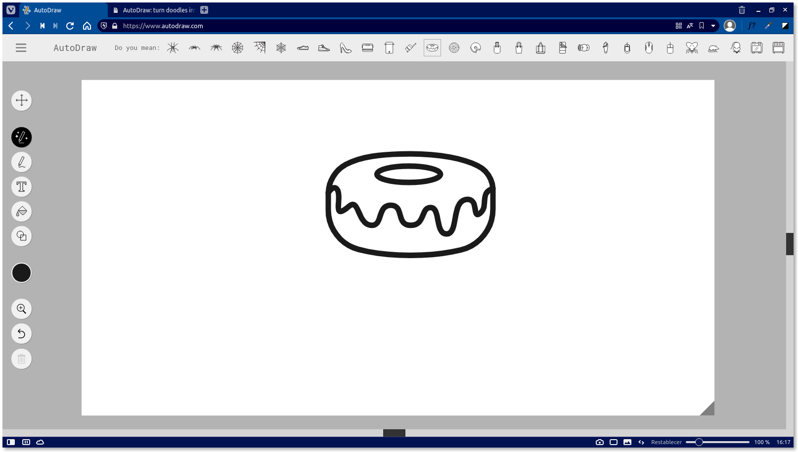
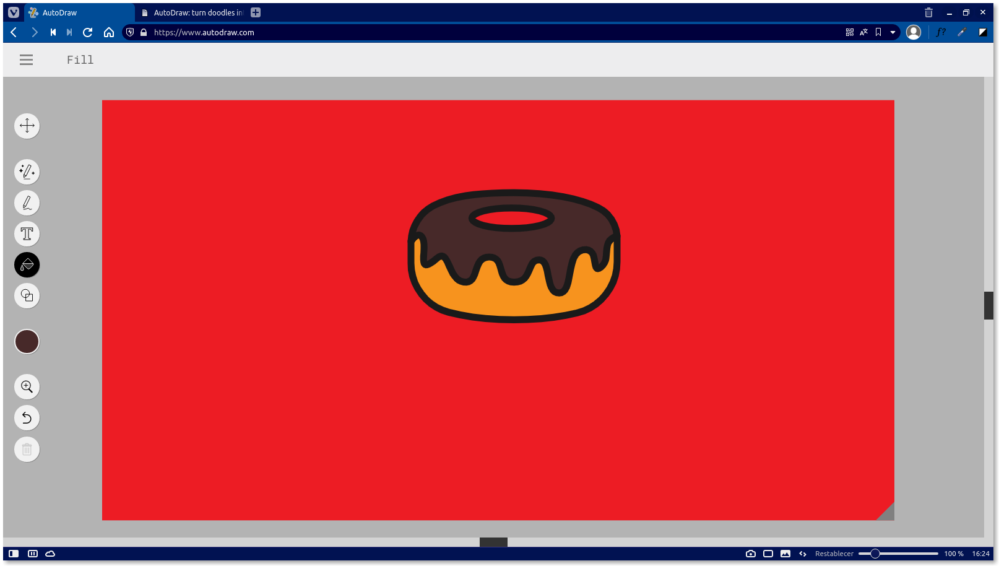

AutoDraw: a fantastic website for drawing
As you could read on the cover of this article, if your thing is not drawing, you can use this fantastic website to create drawings easily, all you need is to make a shape similar to the drawing you want, and the web will show you drawings that you reference, the page is very well done, the truth, and has several options and shortcuts that you can use.
In addition, in the background image of the header I show you a graphic example of what can be achieved by simply drawing a stroke, in this case, I drew "a glass" and the page has detected it perfectly (keep in mind that this is an edited image, obviously the page is not like that), it even offered me other images, like a paint bucket. This is very useful (as I said before) for those thesis, degree projects or works that have to be done with drawings, they facilitate the objectives and increase our productivity, although, this tool can make the lazy ones to be lazier...
Below you will be able to read a summary of how to make these drawings, it is that, it is simple to make them, I will try to make it as short as possible, since I recognize that a lot of text can bore you and make you leave the site or skip to the point that matters to you.
Draw something
When you go to their website by clicking here, you will see a very user-friendly UI, consisting of several options, which I will list (they will be ordered as they appear on the page) and tell you their function at the same time:
- Select: selects an element.
- AutoDraw: drawing a shape or an outline, it offers some drawings to which you have referred.
- Draw.
- Type: write text.
- Fill: fills the selected background with some color.
- Shape: insert shape.
- Color: stroke color.
- Zoom.
- Undo.
- Delete: erase some element.
The star option is AutoDraw, maybe it is not entirely accurate or maybe it does not know sometimes what we are referring to, but it is certainly useful, all you have to do is to draw a line and see what options it offers you, if you open the image above this paragraph maybe you can see a line that says: "Do you mean:", because that is what you are referring to. As an example, I drew a donut shape, it detected it and I applied their drawing, now, let's change the colors.
Change the stroke color
Note that when you set another stroke color, it is not applied to the current drawing you have on the screen, it will be applied through the next stroke you make, so I will make the outline again (I will not insert an image to avoid making this longer) and apply the reference they provide. You will see that in the next image:
Once done again, I will proceed to fill the backgrounds with colors, imagine you are using Microsoft Paint or similar and you are going to fill in the blanks with colors.
Fill the image
Let's put first in context, the colors that I will use, for the bottom of the donut cake, I will use an orange that does not make much contrast, which will have as syrup a flavor that I love, chocolate, and background, a red color. While doing this, I found something that could be improved, and that is that the hole of the donut could be left in the color of the syrup or cake, but when trying to fill it, the bottom is colored, this is something more personal. You can see the result in the image below.
How to Download?
You only have to click on the icon of the bars in the upper left corner, there you will see the option "Download", although it would be nice if there was a Pro version to access other functions, such as downloading the image without background and that you could change the stroke color of the image once the AutoDraw effect is applied, without more to say, below you have a video, and by the way, I hope you liked this post and share it with friends.